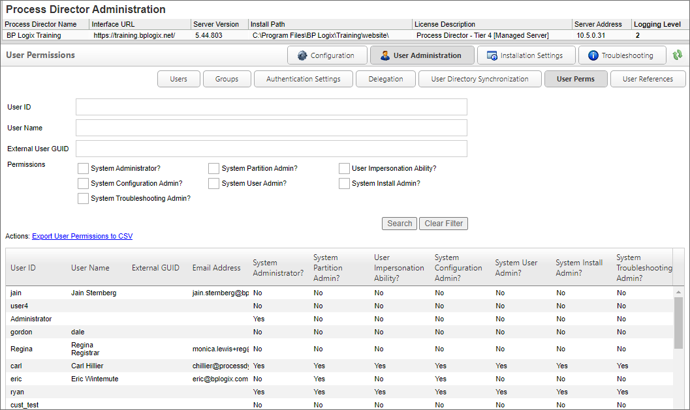

Administrators of Cloud installations or on-Premise installations with the Compliance Option will notice an additional User Perms page in the User Administration section.

The User Perms page enables you to find users and view a report of permissions that are applicable to that user.
The top section of the page provides a number of search fields that you can fill out to filter the number of objects returned by the search. The filter criteria will accept all or part of a User ID or User Name, or the GUID of an external user. Once you have entered the filter criteria you desire, click the Search button to see a list of all the objects that match your filter criteria.